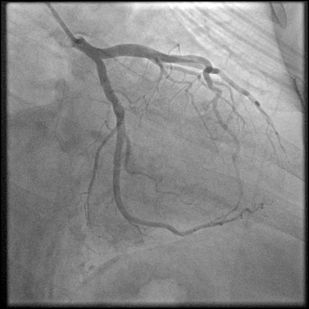
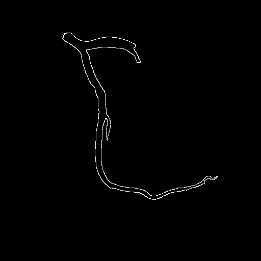
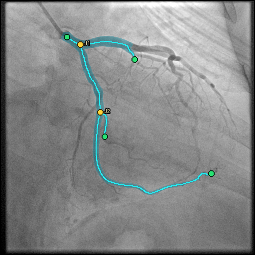
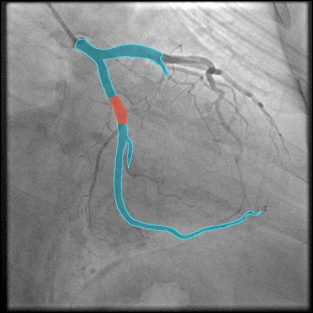

Case FRESH-2D-6a7902 · run 980c5b4d-9f5e-440f-ba60-23c7156eed31 · preserved 2D release 20261023.
Research demonstration, not diagnosis. This is a standalone evidence gallery of saved artifacts, not a new inference run. No ground truth was attached to this application run; no image-specific accuracy or advanced-model prediction is shown.




5 paths · 2 junctions · 4 endpoints · centerline length 797.96 px · mean approximate width 12.08 px · 10th–90th percentile width 6–18.44 px. No physical calibration. These global mask widths are not lesion-local minimum/reference diameters.
| Model | Mean Dice | Mean recall | Decision |
|---|---|---|---|
| Preserved baseline | 0.827277314 | 0.821873793 | Retained |
| Historical 32-update topology candidate | 0.826976523 | 0.814116442 | Rejected |
| Attention U-Net | Pending | Pending | Untrained |
Comparison is historical development evidence, not independent test accuracy. No illustrative advanced masks or invented ground-truth panels are substituted.
“Our baseline segments artery pixels. We then derive a centerline graph and approximate vessel widths from the predicted mask. A separate trained stenosis model produces candidate regions; these are not confirmed lesions. The application saves the outputs with run and model provenance and exports research reports. Our tested improvement candidate regressed and was rejected, preserving the baseline. Advanced Attention U-Net is implemented but untrained.”
“Severity is not automatically graded: validated local/reference diameters and an approved protocol are missing. The displayed explanation is deterministic, not Gemini. Grad-CAM is unavailable for this saved run. The 3D pipeline demonstrates segmentation and geometry-preserving mask export, not validated 3D stenosis or severity.”
Open CoroVision → Research Cases → FRESH-2D-6a7902 → Open analysis. Select Centerline graph; expand Vessel measurements & quality checks and Candidate evidence; use AI overlay / Stenosis probability and View report. For model comparisons use an authorized ML Engineer account → Model Evaluation. For 3D select FRESH-3D-fdbe28 → Analysis history → 3D explanation and downstream stage availability.